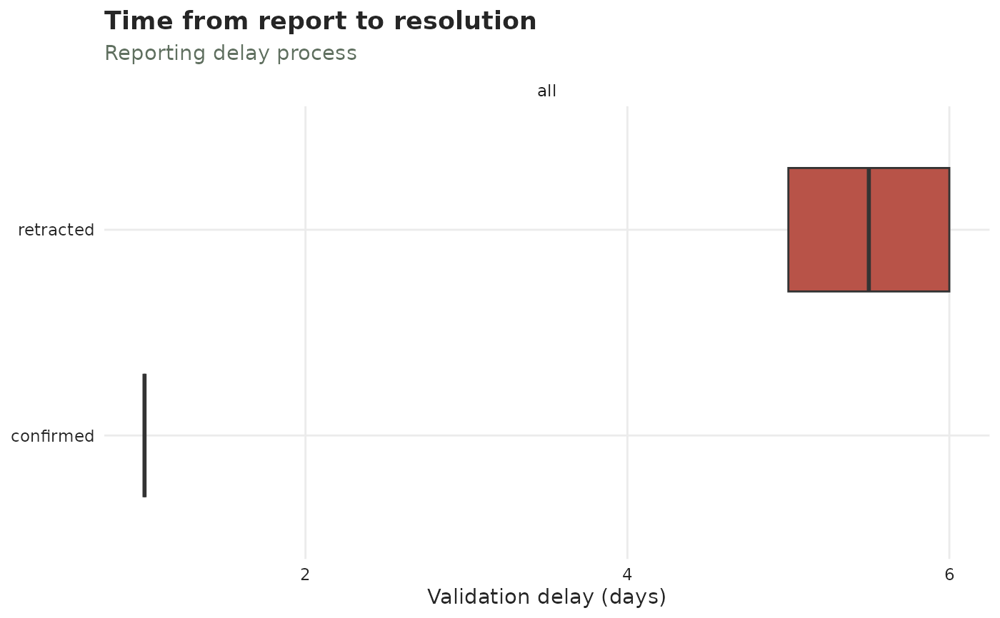

Compare validation delays between confirmed and retracted cases
validation_delay.Rd![[Experimental]](figures/lifecycle-experimental.svg)
A negative result often comes back faster than a positive one – or slower, if positives are prioritised. Either way the delay from report to resolution is not the same distribution for the two outcomes, and a nowcast that assumes it is will be wrong about how many pending cases are still to be confirmed.
diagnose_validation_delay() compares the two delay distributions;
plot_validation_delay() shows them.
Value
diagnose_validation_delay() returns a one-row-per-comparison tibble with
stratum, n_confirmed, n_retracted, median_confirmed,
median_retracted, difference, statistic and p.value.
plot_validation_delay() returns a ggplot.
The test
A two-sided Wilcoxon rank-sum test on the validation delays. It is used rather than a t-test because reporting delays are strongly right-skewed and frequently have a point mass at zero, so a difference in means is neither robust nor the quantity of interest – what matters is whether one outcome resolves systematically sooner.
A small p-value says the two delay distributions differ. It does not say
the difference matters: with tens of thousands of records a one-hour
difference is significant and irrelevant, so read difference (the gap in
median days) alongside it.
Rows with a missing or negative delay are dropped, and how many is reported
in the dropped attribute of the result. A negative validation delay means
the record is validated before it was reported, which the timeline forbids.
See also
add_validation_date() to attach a validation process;
censor_validation_delays_above() for resolutions that
never arrive; validated_cases for counting the outcomes;
diagnose_drift() for the same question about the reporting delay over time.
The Diagnosing a tbl_now article
puts this alongside the other checks.
Examples
cases <- data.frame(
onset = as.Date("2021-01-04") + rep(0:9, each = 4),
visit = as.Date("2021-01-05") + rep(0:9, each = 4),
result = as.Date("2021-01-05") + rep(0:9, each = 4) +
rep(c(1, 1, 5, 6), times = 10),
outcome = rep(c("confirmed", "confirmed", "retracted", "retracted"), times = 10)
)
flu <- tbl_now(cases,
event_date = onset, report_date = visit,
validation_date = result, validation_type = outcome,
data_type = "linelist", verbose = FALSE
)
# Retractions here come back about four days later than validations, and
# the test says so.
diagnose_validation_delay(flu)
#> # A tibble: 1 × 8
#> stratum n_confirmed n_retracted median_confirmed median_retracted difference
#> <chr> <int> <int> <dbl> <dbl> <dbl>
#> 1 all 20 20 1 5.5 -4.5
#> # ℹ 2 more variables: statistic <dbl>, p.value <dbl>
# The same comparison as a picture.
plot_validation_delay(flu)
